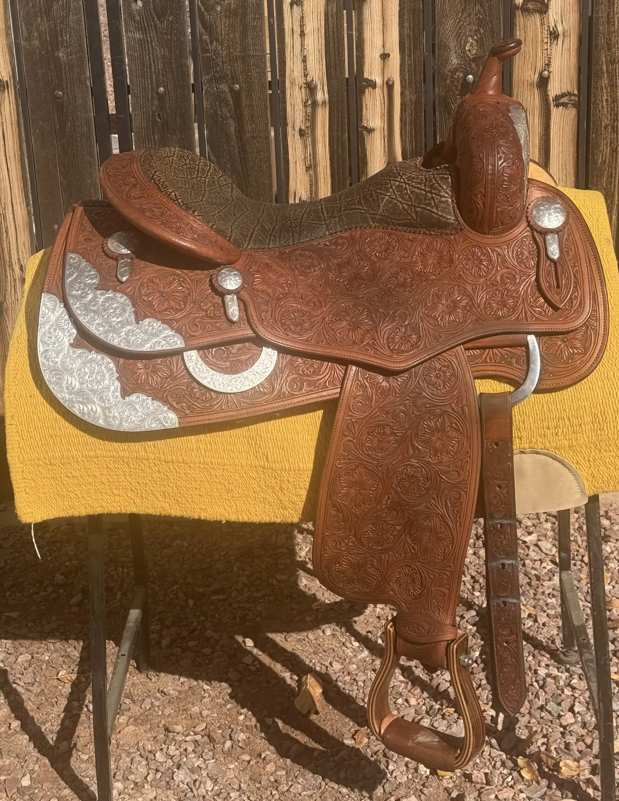

Certified Pre-Owned
David Solum personally inspects every saddle in his inventory — tree integrity verified, leather condition documented, quality guaranteed. Forty years of NRCHA and reining expertise behind every listing.
Featured Inventory
These saddles from David Solum's certified inventory are well-suited to reined cow horse and cowhorse/reiner crossover work. Inventory moves quickly — contact David directly to hold a saddle or discuss fit for your horse.




David Solum — Certified Used Saddles
David maintains an active want-list. Tell him the maker, seat size, tree width, and price range — he'll reach out when a matching saddle comes through. He also accepts quality saddles on consignment.